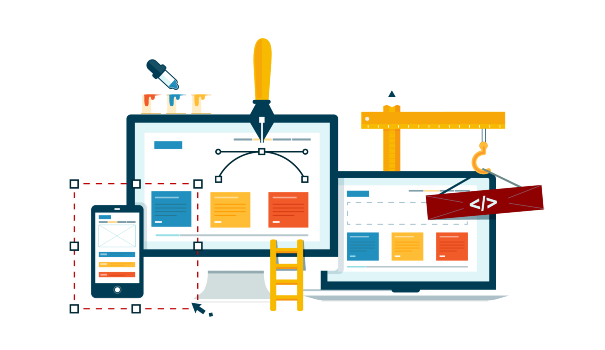
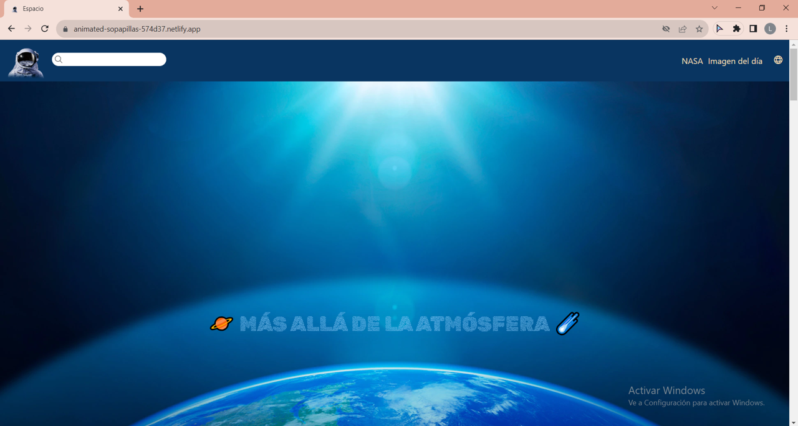
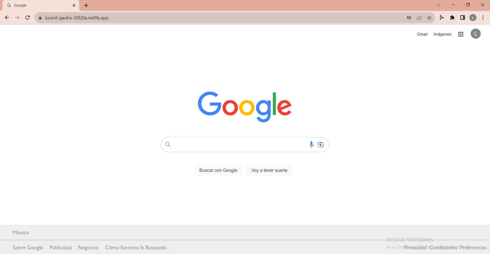
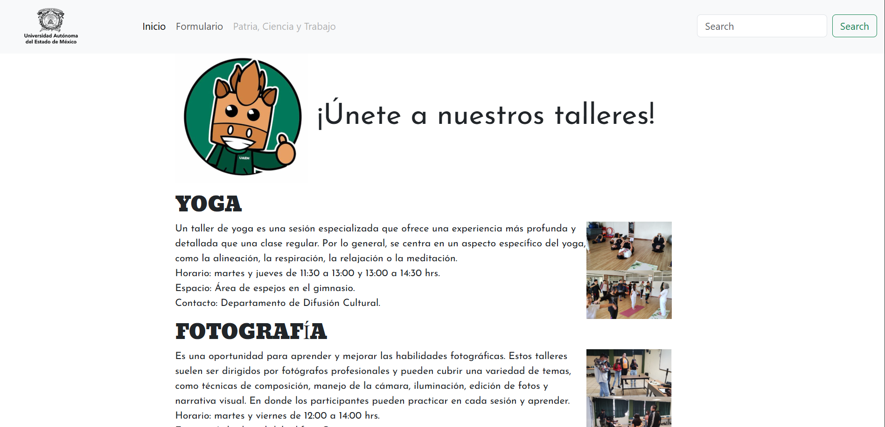

Soy estudiante de los últimos semestres de la Licenciatura en Informática Administrativa en el Centro Universitario UAEM Ecatepec.
Gracias a mi formación universitaria, me he planteado el objetivo de analizar, diseñar, desarrollar, implementar y operar sistemas de información que contribuyan a la toma de decisiones administrativas y financieras dentro de las organizaciones y empresas.

Experiencias
Vida Universitaria
Actualmente estoy desarrollando un sistema de nómina, aplicando lógica, estructura de datos y buenas prácticas de codificación.
Diseñé una tienda en línea de anillos inteligentes en WordPress, integrando conceptos de comercio electrónico, experiencia de usuario y herramientas digitales.
Realizo mi servicio social como auxiliar administrativo en la coordinación de la Licenciatura de Ingeniería en Computación, participando activamente en:
Recopilación y organización de datos de estudiantes con materias pendientes.
Desarrollo de materiales gráficos y contenidos para redes sociales que informan y motivan a la comunidad estudiantil.
Creación de formatos académicos personalizados por asignatura según el plan curricular.
Creo firmemente que...
Vivimos en un mundo en constante transformación, por lo que la adaptabilidad y la innovación son habilidades clave.
La inteligencia artificial representa el futuro, y estoy comprometida con prepararme para aprovechar su potencial en el ámbito profesional.
Soporte Informático
En la evaluación del estándar de competencia EC0388, realicé actividades relacionadas con:
Preparación, diagnóstico y mantenimiento de equipos de cómputo.
Verificación del rendimiento del sistema.
Revisión de configuraciones de red y acceso a la BIOS.
Mantenimiento preventivo.
Ponchado de cable UTP para redes LAN.
Gestión de formatos de inventario, diagnóstico y seguimiento.
Desarrollo Web
Cuento con experiencia en el uso de:
Visual Studio Code, HTML y CSS para páginas web informativas.
Conocimientos en diseño web responsivo y control de versiones.
Conocimientos en publicación web, gestión de dominios y almacenamiento de datos
Participación en el desarrollo de páginas de comercio electrónico, integrando inteligencia artificial para mejorar la experiencia del usuario.
Formación práctica en el programa Tecnolochicas PRO.
Animación
Mi incursión en Autodesk Maya me ha permitido explorar el modelado y la animación digital como una forma creativa de expresión y desarrollo profesional.
Conocimiento de los conceptos básicos de Autodesk Maya.
Experiencia inicial en modelado y creación de animaciones.
Capacidad para dar vida a personajes, objetos y escenas.
Motivación constante por perfeccionar técnicas y abordar proyectos más complejos.
Modelado e Impresión 3D
Mi formación en Modelado e Impresión 3D me ha permitido convertir ideas en objetos reales, integrando creatividad y tecnología.
Manejo de herramientas como Tinkercad, Maya, Autodesk y Cura.
Habilidad para diseñar, modelar y preparar objetos 3D para impresión.
Capacidad para transformar conceptos en modelos físicos y funcionales.
Desarrollo de la imaginación aplicada a la creación tridimensional.
Ciencia de datos
Mi formación en análisis de datos me ha brindado las herramientas necesarias para interpretar información de manera estratégica y aportar valor en entornos digitales.
Limpieza y preparación de datos utilizando Python.
Creación de gráficos para visualizar e interpretar información.
Primer contacto con inteligencia artificial aplicada al análisis de datos.
Comprensión del análisis de gustos y comportamientos para ofrecer recomendaciones personalizadas.
Manejo de bases de datos con SQL y desarrollo de una base sólida para la toma de decisiones informadas.
Excel
Mi certificación en Excel 2019 fortaleció mis competencias en el manejo de datos y la optimización de procesos mediante herramientas avanzadas.
Dominio de fórmulas y funciones esenciales.
Uso de tablas y gráficas dinámicas para visualizar datos.
Aplicación de herramientas de automatización en hojas de cálculo.
Habilidad para organizar, analizar y presentar información de forma eficiente.
Apoyo a la toma de decisiones basada en datos.
Mis proyectos Web
Estos son algunos proyectos que he creado...

Proyecto 1

Proyecto 2

Proyecto 3
Testimonios
Estos son algunos testimonios de mi desempeño...
Lizbeth ha desarrollado sus habilidades en programación front-end. Como estudiante, se notó su compromiso y enfoque para aprender y aplicar nuevos conceptos. Es una persona colaborativa y siempre dispuesta a ayudar a sus compañer@s."
Miranda Jaramillo
Instructura de programa TecnolochicasPRO
Liz Alejandra demostró entusiasmo por aprender más haya de lo que se le impartía equilibrando su vida sin perder la motivación o se agotará en el proceso de su aprendizaje, siempre esforzándose por destacar en la escuela conviviendo con sus compañeros de manera respetuosa así como con sus profesores, dando a expresar sus emociones de manera oportuna. Así también presento ser una alumna responsable en todas sus actividades así como en la participación en las clases.
Verónica Malváez Hernández
Licenciada en Teleinformatica.
Lizbeth a demostrado ser una estudiante excepcional, destacando por su dedicación y compromiso con el aprendizaje. Asimismo, su actitud colaborativa y disposición para trabajar en equipo han sido notables, brindando un valioso aporte a sus compañeras de clase.
Jessica Sanchez Licencia en Pedagogía.
Mentora en Tecnolochicas.
¡Hablemos!
Contáctame para iniciar tu proyecto de desarrollo web y haré que tu visión se vuelva realidad.